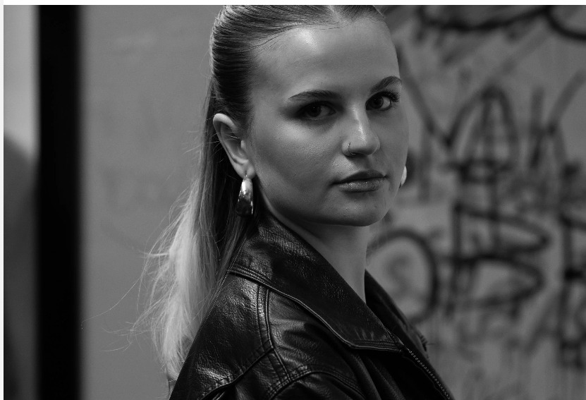
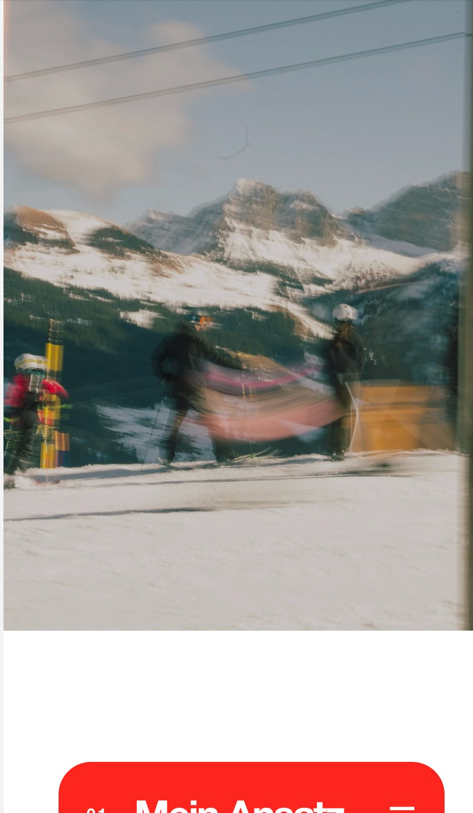

Feb. 2026 – Heute
Aktuell
Blue Social Media
Ausbildung zur Mediamatikerin · Swisscom / blue NewsSocial Content, News-Videos, Reels und visuelles Storytelling für digitale Plattformen.

Social Media, Design, Video & Ideen
mit Persönlichkeit.
Als angehende Mediamatikerin arbeite ich an Social-Media-Projekten, Videos, Designs und kreativen Konzepten für Brands, Unternehmen und digitale Plattformen.
Ich interessiere mich für Medien, Gestaltung und Social Media. Nach meiner ersten Ausbildung im Gesundheitsbereich merkte ich, dass ich beruflich kreativer arbeiten möchte.
Heute mache ich die Ausbildung zur Mediamatikerin. Am liebsten arbeite ich an Videos, Fotos, Social-Media-Beiträgen und Designs. Ich mag es, aus einer Idee etwas Sichtbares zu machen.
Stationen, Erfahrungen und Projekte, die mich in Richtung Medien, Design und Social Media gebracht haben.
Social Content, News-Videos, Reels und visuelles Storytelling für digitale Plattformen.
Kamera, Schnitt und visuelle Kommunikation mit Fokus auf Storytelling und Bildsprache.
Design, Fotografie und Bildbearbeitung mit Fokus auf Layout und visuelle Wirkung.
Grundlagen von Medienproduktion, Gestaltung, Fotografie und digitalen Projekten.
Kundenkontakt, Teamarbeit und Verantwortung.
